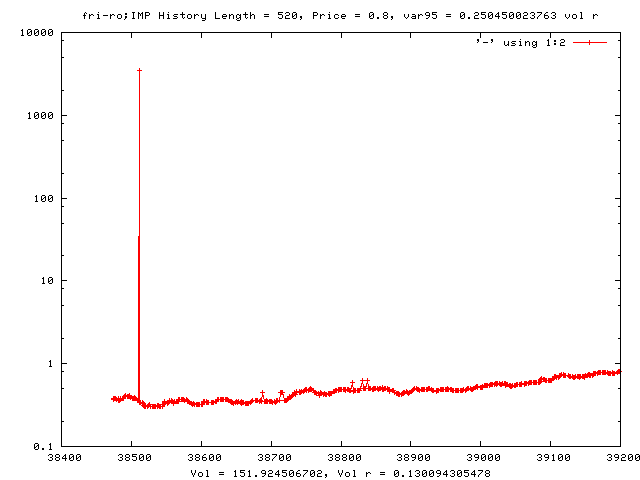
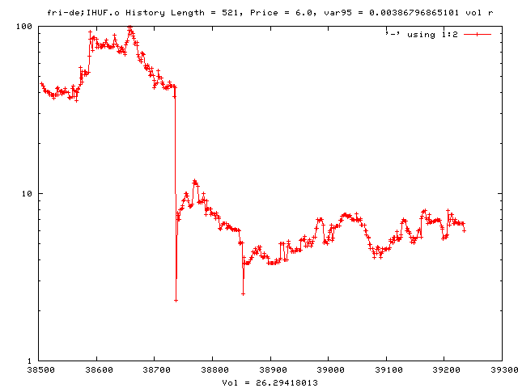

SciPy on WSGI
| Talk given at: | PyCon Uno 2007 |
|---|---|
| By: | Michele Simionato |
| Organization: | StatPro Italy |
| Date: | 2007-06-09 |
Subtitle: Science on the Web for pedestrians
Before I start
What about you?
Are you more of a programmer or more of a scientist/engineer?
What kind of scientific tools are you using, if any?
Have you ever heard of SciPy?
Have you ever heard of WSGI?
Ok, now I can begin ;)
The motivation from this talk comes from a real problem at StatPro
we have bad histories for many financial products
wrong prices at some dates in the past
A picture
(damn data providers!)
Discarding values ...
... is tricky!
Issues
We cannot use the conventional criterium

Strategy
- price distributions (ln p_i/p) are known to decay with power laws
- fit the distributions with a "reasonable" curve and determine a suitable criterium for the spikes at some confidence level
- a reasonably simple ansatz gives a family of distributions depending on a parameter delta
- show formulae
delta-distribution

From Dirac delta (delta -> 0) to Gaussian distribution (delta -> oo)

Relation VAR-vol.
If you assume a given distribution, there is a fixed relation between VAR-XX and volatility
- for the Gaussian VAR-95 = 1.64 sigma, for a lot of our distributions VAR-95 < 1.0 sigma
- we don't want to make assumptions on the distribution function for computing the VAR
- but we are willing to make assumptions for the sake of eliminating statistically invalid values
The tool we need
$ python simpleplotter.py "fri-gb;AVE"
(not 100% finished yet!)
Enter SciPy & Co.
In order to perform our analysis we looked at many scientific tools
- a good plotting tool (matplotlib)
- support for histograms (matplotlib)
- support for special functions (scipy.special)
- support for non-linear fitting (scipy.leastsq)
- good performance (scipy)
- interactive and IPython-friendly (scipy)
- bla-bla
- cheating: I actually used Gnuplot!! ;-)
Installation
If you are lucky, it is trivial:
$ apt-get install ipython $ apt-get install python-matplotlib $ apt-get install python-numpy $ apt-get install python-numpy-ext $ apt-get install python-scipy
If you are unlucky, or if you try to build from sources, YMMV ...
What's in Scipy
- support for multi-dimensional array (numpy)
- linear algebra and minimization routines
- solving, integration, interpolation, fitting
- special functions and statistical functions
- etc. etc.
Special functions
Airy Functions:
airy --Airy functions and their derivatives. airye --Exponentially scaled Airy functions ai_zeros --Zeros of Airy functions Ai(x) and Ai'(x) bi_zeros --Zeros of Airy functions Bi(x) and Bi'(x)
Elliptic Functions and Integrals
ellipj --Jacobian elliptic functions ellipk --Complete elliptic integral of the first kind. ellipkinc --Incomplete elliptic integral of the first kind. ellipe --Complete elliptic integral of the second kind. ellipeinc --Incomplete elliptic integral of the second kind.
Bessel Functions
jn --Bessel function of integer order and real argument. jv --Bessel function of real-valued order and complex argument. jve --Exponentially scaled Bessel function. yn --Bessel function of second kind (integer order). yv --Bessel function of the second kind (real-valued order). yve --Exponentially scaled Bessel function of the second kind. kn --Modified Bessel function of the third kind (integer order). kv --Modified Bessel function of the third kind (real order). kve --Exponentially scaled modified Bessel function of the third kind. iv --Modified Bessel function. ive --Exponentially scaled modified Bessel function. hankel1 --Hankel function of the first kind. hankel1e --Exponentially scaled Hankel function of the first kind. hankel2 --Hankel function of the second kind. hankel2e --Exponentially scaled Hankel function of the second kind. lmbda --Sequence of lambda functions with arbitrary order v.
Zeros of Bessel Functions
jnjnp_zeros
--Zeros of integer-order Bessel functions and derivatives
sorted in order.
jnyn_zeros
--Zeros of integer-order Bessel functions and derivatives
as separate arrays.
jn_zeros
--Zeros of Jn(x)
jnp_zeros
--Zeros of Jn'(x)
yn_zeros
--Zeros of Yn(x)
ynp_zeros
--Zeros of Yn'(x)
y0_zeros
--Complex zeros: Y0(z0)=0 and values of Y0'(z0)
y1_zeros
--Complex zeros: Y1(z1)=0 and values of Y1'(z1)
y1p_zeros
--Complex zeros of Y1'(z1')=0 and values of Y1(z1')
Faster versions
j0
--Bessel function of order 0.
j1
--Bessel function of order 1.
y0
--Bessel function of second kind of order 0.
y1
--Bessel function of second kind of order 1.
i0
--Modified Bessel function of order 0.
i0e
--Exponentially scaled modified Bessel function of order 0.
i1
--Modified Bessel function of order 1.
i1e
--Exponentially scaled modified Bessel function of order 1.
k0
--Modified Bessel function of the third kind of order 0.
k0e
--Exponentially scaled modified Bessel function of the
third kind of order 0.
k1
--Modified Bessel function of the third kind of order 1.
k1e
--Exponentially scaled modified Bessel function of the
third kind of order 1.
Integrals of Bessel Functions
itj0y0
--Basic integrals of j0 and y0 from 0 to x.
it2j0y0
--Integrals of (1-j0(t))/t from 0 to x and
y0(t)/t from x to inf.
iti0k0
--Basic integrals of i0 and k0 from 0 to x.
it2i0k0
--Integrals of (i0(t)-1)/t from 0 to x and
k0(t)/t from x to inf.
besselpoly
--Integral of a bessel function: Jv(2*a*x) * x^lambda
from x=0 to 1.
Derivatives of Bessel Functions
jvp --Nth derivative of Jv(v,z) yvp --Nth derivative of Yv(v,z) kvp --Nth derivative of Kv(v,z) ivp --Nth derivative of Iv(v,z) h1vp --Nth derivative of H1v(v,z) h2vp --Nth derivative of H2v(v,z)
Spherical Bessel Functions
sph_jn --Sequence of spherical Bessel functions, jn(z) sph_yn --Sequence of spherical Bessel functions, yn(z) sph_jnyn --Sequence of spherical Bessel functions, jn(z) and yn(z) sph_in --Sequence of spherical Bessel functions, in(z) sph_kn --Sequence of spherical Bessel functions, kn(z) sph_inkn --Sequence of spherical Bessel functions, in(z) and kn(z)
Riccati-Bessel Fun.
riccati_jn --Sequence of Ricatti-Bessel functions of first kind. riccati_yn --Sequence of Ricatti-Bessel functions of second kind.
Struve Functions
struve --Struve function --- Hv(x) modstruve --Modified struve function --- Lv(x) itstruve0 --Integral of H0(t) from 0 to x it2struve0 --Integral of H0(t)/t from x to Inf. itmodstruve0 --Integral of L0(t) from 0 to x.
Statistical Functions
bdtr
--Sum of terms 0 through k of of the binomial pdf.
bdtrc
--Sum of terms k+1 through n of the binomial pdf.
bdtri
--Inverse of bdtr
btdtr
--Integral from 0 to x of beta pdf.
btdtri
--Quantiles of beta distribution
fdtr
--Integral from 0 to x of F pdf.
fdtrc
--Integral from x to infinity under F pdf.
fdtri
--Inverse of fdtrc
gdtr
--Integral from 0 to x of gamma pdf.
gdtrc
--Integral from x to infinity under gamma pdf.
gdtri
--Quantiles of gamma distribution
nbdtr
--Sum of terms 0 through k of the negative binomial pdf.
nbdtrc
--Sum of terms k+1 to infinity under negative binomial pdf.
nbdtri
--Inverse of nbdtr
pdtr
--Sum of terms 0 through k of the Poisson pdf.
pdtrc
--Sum of terms k+1 to infinity of the Poisson pdf.
pdtri
--Inverse of pdtr
stdtr
--Integral from -infinity to t of the Student-t pdf.
stdtri
--Inverse of stdtr (quantiles)
chdtr
--Integral from 0 to x of the Chi-square pdf.
chdtrc
--Integral from x to infnity of Chi-square pdf.
chdtri
--Inverse of chdtrc.
ndtr
--Integral from -infinity to x of standard normal pdf
ndtri
--Inverse of ndtr (quantiles)
smirnov
--Kolmogorov-Smirnov complementary CDF for one-sided
test statistic (Dn+ or Dn-)
smirnovi
--Inverse of smirnov.
kolmogorov
--The complementary CDF of the (scaled) two-sided test
statistic (Kn*) valid for large n.
kolmogi
--Inverse of kolmogorov
tklmbda
--Tukey-Lambda CDF
Gamma and Related Functions
gamma --Gamma function. gammaln --Log of the absolute value of the gamma function. gammainc --Incomplete gamma integral. gammaincinv --Inverse of gammainc. gammaincc --Complemented incomplete gamma integral. gammainccinv --Inverse of gammaincc. beta --Beta function. betaln --Log of the absolute value of the beta function. betainc --Incomplete beta integral. betaincinv --Inverse of betainc. betaincinva --Inverse (in first argument, a) of betainc betaincinvb --Inverse (in first argument, b) of betainc psi(digamma) --Logarithmic derivative of the gamma function. rgamma --One divided by the gamma function. polygamma --Nth derivative of psi function.
Error Function and Fresnel Int.
erf --Error function. erfc --Complemented error function (1- erf(x)) erfinv --Inverse of error function erfcinv --Inverse of erfc erf_zeros --Complex zeros of erf(z) fresnel --Fresnel sine and cosine integrals. fresnel_zeros --Complex zeros of both Fresnel integrals fresnelc_zeros --Complex zeros of fresnel cosine integrals fresnels_zeros --Complex zeros of fresnel sine integrals modfresnelp --Modified Fresnel integrals F_+(x) and K_+(x) modfresnelm --Modified Fresnel integrals F_-(x) and K_-(x)
Legendre Functions
lpn
--Legendre Functions (polynomials) of the first kind
lqn
--Legendre Functions of the second kind.
lpmn
--Associated Legendre Function of the first kind.
lqmn
--Associated Legendre Function of the second kind.
lpmv
--Associated Legendre Function of arbitrary non-negative
degree v.
sph_harm
--Spherical Harmonics (complex-valued) Y^m_n(theta,phi)
Orthogonal polyn.
legendre --Legendre polynomial P_n(x) chebyt --Chebyshev polynomial T_n(x) chebyu --Chebyshev polynomial U_n(x) chebyc --Chebyshev polynomial C_n(x) chebys --Chebyshev polynomial S_n(x) jacobi --Jacobi polynomial P^(alpha,beta)_n(x) laguerre --Laguerre polynomial, L_n(x) genlaguerre --Generalized (Associated) Laguerre polynomial, L^alpha_n(x) hermite --Hermite polynomial H_n(x) hermitenorm --Normalized Hermite polynomial, He_n(x) gegenbauer --Gegenbauer (Ultraspherical) polynomials, C^(alpha)_n(x) sh_legendre --shifted Legendre polynomial, P*_n(x) sh_chebyt --shifted Chebyshev polynomial, T*_n(x) sh_chebyu --shifted Chebyshev polynomial, U*_n(x) sh_jacobi --shifted Jacobi polynomial, J*_n(x) = G^(p,q)_n(x)
HyperGeometric Functions
hyp2f1 --Gauss hypergeometric function (2F1) hyp1f1 --Confluent hypergeometric function (1F1) hyperu --Confluent hypergeometric function (U) hyp0f1 --Confluent hypergeometric limit function (0F1) hyp2f0 --Hypergeometric function (2F0) hyp1f2 --Hypergeometric function (1F2) hyp3f0 --Hypergeometric function (3F0)
Parabolic Cylinder Functions
pbdv --Parabolic cylinder function Dv(x) and derivative. pbvv --Parabolic cylinder function Vv(x) and derivative. pbwa --Parabolic cylinder function W(a,x) and derivative. pbdv_seq --Sequence of parabolic cylinder functions Dv(x) pbvv_seq --Sequence of parabolic cylinder functions Vv(x) pbdn_seq --Sequence of parabolic cylinder functions Dn(z), complex z
Mathieu functions
mathieu_a --Characteristic values for even solution (ce_m) mathieu_b --Characteristic values for odd solution (se_m) mathieu_even_coef --sequence of expansion coefficients for even solution mathieu_odd_coef --sequence of expansion coefficients for odd solution ** All the following return both function and first derivative ** mathieu_cem --Even mathieu function mathieu_sem --Odd mathieu function mathieu_modcem1 --Even modified mathieu function of the first kind mathieu_modcem2 --Even modified mathieu function of the second kind mathieu_modsem1 --Odd modified mathieu function of the first kind mathieu_modsem2 --Odd modified mathieu function of the second kind
Spheroidal Wave Functions
pro_ang1 --Prolate spheroidal angular function of the first kind pro_rad1 --Prolate spheroidal radial function of the first kind pro_rad2 --Prolate spheroidal radial function of the second kind obl_ang1 --Oblate spheroidal angluar function of the first kind obl_rad1 --Oblate spheroidal radial function of the first kind obl_rad2 --Oblate spheroidal radial function of the second kind pro_cv --Compute characteristic value for prolate functions obl_cv --Compute characteristic value for oblate functions pro_cv_seq --Compute sequence of prolate characteristic values obl_cv_seq --Compute sequence of oblate characteristic values ** The following functions require pre-computed characteristic values ** pro_ang1_cv --Prolate spheroidal angular function of the first kind pro_rad1_cv --Prolate spheroidal radial function of the first kind pro_rad2_cv --Prolate spheroidal radial function of the second kind obl_ang1_cv --Oblate spheroidal angluar function of the first kind obl_rad1_cv --Oblate spheroidal radial function of the first kind obl_rad2_cv --Oblate spheroidal radial function of the second kind
Kelvin Functions
kelvin --All Kelvin functions (order 0) and derivatives. kelvin_zeros --Zeros of All Kelvin functions (order 0) and derivatives ber --Kelvin function ber x bei --Kelvin function bei x berp --Derivative of Kelvin function ber x beip --Derivative of Kelvin function bei x ker --Kelvin function ker x kei --Kelvin function kei x kerp --Derivative of Kelvin function ker x keip --Derivative of Kelvin function kei x ber_zeros --Zeros of Kelvin function bei x bei_zeros --Zeros of Kelvin function ber x berp_zeros --Zeros of derivative of Kelvin function ber x beip_zeros --Zeros of derivative of Kelvin function bei x ker_zeros --Zeros of Kelvin function kei x kei_zeros --Zeros of Kelvin function ker x kerp_zeros --Zeros of derivative of Kelvin function ker x keip_zeros --Zeros of derivative of Kelvin function kei x
Other Special Functions
expn --Exponential integral. exp1 --Exponential integral of order 1 (for complex argument) expi --Another exponential integral --Ei(x) wofz --Fadeeva function. dawsn --Dawson's integral. shichi --Hyperbolic sine and cosine integrals. sici --Integral of the sinc and "cosinc" functions. spence --Dilogarithm integral. zeta --Riemann zeta function of two arguments. zetac --1.0 - standard Riemann zeta function.
Convenience Functions
cbrt --Cube root. exp10 --10 raised to the x power. exp2 --2 raised to the x power. radian --radian angle given degrees, minutes, and seconds. cosdg --cosine of the angle given in degrees. sindg --sine of the angle given in degrees. tandg --tangent of the angle given in degrees. cotdg --cotangent of the angle given in degrees. log1p --log(1+x) expm1 --exp(x)-1 cosm1 --cos(x)-1 round --round the argument to the nearest integer. If argument ends in 0.5 exactly, pick the nearest even integer.
... and more!
but let us go back to our problem
- at the present we are cleaning our histories in production with a quick and dirty criterium;
- we want to be able to see the histories case by case in order to take specific actions;
- we want to go on the Web (--> next)
Going on the Web
- we want a simple tool for internal usage on our intranet;
- convenient to integrate with other Web tools;
- usable also for non-techical users;
- avoid installing and mantaining on every machine;
- possibly we may open it to our other offices in the world;
- we like the browser interface.
Without a framework
- no security concerns;
- no scalability concerns;
- no nice-looking concerns;
- it must be EASY to change;
- we want minimal learning curve;
- we want no installation/configuration hassle;
- we want no dependencies;
- we want something even simpler than CGI, if possible!
Enter WSGI
- WSGI = Web Server Gateway Interface (Whiskey for friends)
- the brainchild of Python guru Phillip J. Eby;
- also input from Ian Bicking (paste) and others;
- starting from Python 2.5, we have a WSGI web server in the standard library (wsgiref);
- there are plenty of simple and useful add-ons for WSGI applications out there;
- even wsgiref fullfills all of our requirements, let's use it! (following the example of Guido ...)
WSGI key concepts
WSGI application:
(env, resp) -> chunks of text
env = environment dictionary of the server; resp = function sending to the client the HTTP headers;
WSGI middleware:
WSGI app -> enhanced WSGI app
Ex1: Hello World
from wsgiref import simple_server
def app(env, resp):
resp(
'200 OK', [('Content-type', 'text/html')])
return ['<h1>Hello, World!</h1>']
server=simple_server.make_server('', 8000, app)
server.serve_forever()
Ex2: middleware
No middleware in the standard library, but lots of useful middleware from third party sources. For instance, authentication middleware:
from paste.auth.basic import AuthBasicHandler
def only_for_pippo(env, user, passwd):
return user == 'pippo'
auth_app = AuthBasicHandler(
app, 'app realm', only_for_pippo)
Other middleware
from wsgiref.simple_server import make_server
from paste.evalexception import EvalException
a, b = 1,0
def app(env, resp):
resp('200 OK', [('Content-type', 'text/html')])
return [str(a/b)]
make_server('', 9090, EvalException(app)).serve_forever()
Show evalexception
WSGI vs. CGI
- WSGI is simpler than CGI
- using wsgiref you don't require an external server
- you can keep sessions in memory
- WSGI scales better than CGI
- there is a large choice of wsgi servers (mod_wsgi, Twisted ...)
- there is a large choice of third party middleware
- it is relatively easy to turn a toy application into a serious one
WSGI vs. frameworks
Pro:
- if you liked playing with Lego, you will be happy
- you have much more control and you are not forced to marry a technology
- you can learn a lot
- others ...
WSGI vs. frameworks
Contra:
- you can build your own framework with WSGI, but you have to debug it
- the existing WSGI frameworks are newer, there is less experience with them
- WSGI is not particularly Twisted-friendly
- others ...
References
That's all, folks!
- http://www.scipy.org
- http://www.python.org/dev/peps/pep-0333
- http://pythonpaste.org/do-it-yourself-framework.html
(P.S. at StatPro, we are hiring! ;)